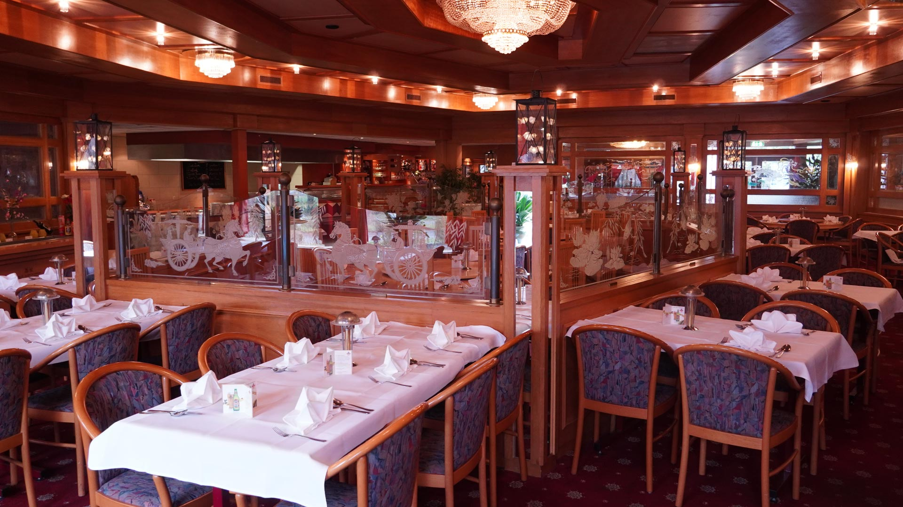
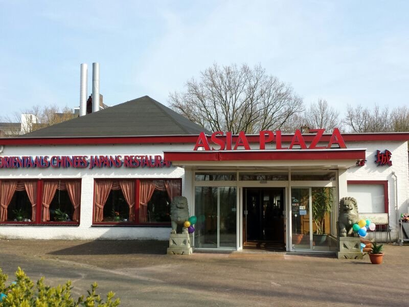
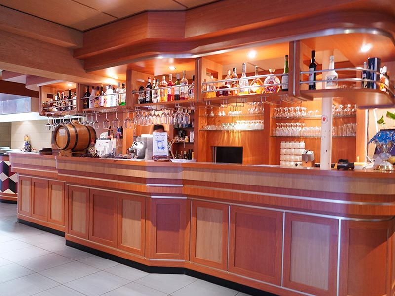
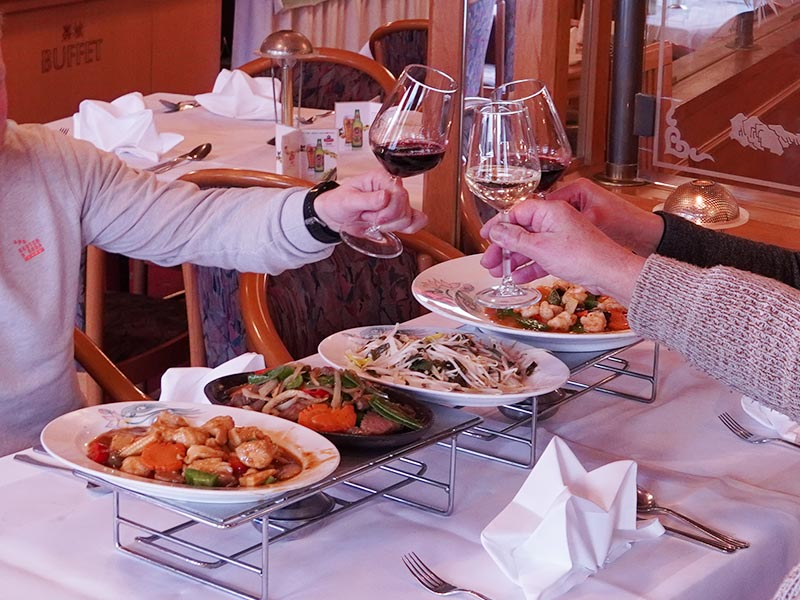

Maandmenu
Maandelijks wisselend menu voor twee personen
- Kip met zwarte bonensaus
- Babi pangang
- Saté ajam (kip)
- Mini loempia’s (6 st., vega)
- Nasi of bami
€ 26,25

Sinds 1998 in Wageningen
De veelzijdige Aziatische keuken, met gerechten uit zes verschillende streken. Aan tafel in ons restaurant, of lekker thuis op de bank.
Alle dagen geopend vanaf 12:00 uur · Hoevestein 217
Welkom bij Asia Plaza. Onze chefs bereiden met passie typisch Aziatische gerechten, vanuit verschillende Chinese invloeden. Kies uit een ruim aanbod met vlees en vis, maar ook vegetarisch.
Kunt u niet kiezen? Wij hebben alvast een paar menu’s samengesteld, van feestdiner tot rijsttafel. Of laat de chef u verrassen.
Heeft u een allergie? Geef het vooraf even door, dan houden wij er met uiterste zorg rekening mee.


Onze kaart is ingedeeld naar de streek waar een gerecht vandaan komt, ieder met eigen specerijen en smaken. Zo is ieder bezoek weer anders.
Bestel gerust op nummer. Prijzen in euro’s.
Geen zin om te koken, maar wel lekker thuis eten? Bestel bij voorkeur telefonisch. We geven u dan een inschatting hoe laat uw bestelling klaarstaat (een indicatie, geen exact tijdstip).
Er is voldoende parkeergelegenheid voor het restaurant. Vergeet uw boodschappentas niet mee te nemen bij het ophalen.
Maandelijks wisselend menu voor twee personen
€ 26,25
Voor ongeveer 4 personen
Cadeau: 8 mini loempiaatjes
€ 50,75
Nasi of bami met 1 stokje kipsaté, en een keuze uit:
€ 12,50
Kies 3 gerechten, bereid voor twee personen. Met 4 gratis loempiaatjes.
€ 33,15 met nasi en/of bami in plaats van witte rijst: + € 1,00 per bakje
Voor iedere 10 euro aan afhaalmaaltijden krijgt u een Asia Plaza stempel. Een volle spaarkaart geeft 10 euro korting op uw volgende besteding, voor al onze afhaalgerechten.
Dagelijks geopend vanaf 12:00 uur. Onze koks hebben ook een selectie specialiteiten uit verschillende Chinese culinaire streken gemaakt.
Alle gerechten worden met witte rijst geserveerd, tenzij anders vermeld. Nasi of bami in plaats van witte rijst + € 1,00. Mihoen, kerrierijst of Chinese bami + € 3,50. Prijzen zijn inclusief plastic-toeslag (van toepassing per 1 juli 2023).
Onze Aziatische gerechten op locatie, voor groepen vanaf 20 personen. In overleg passen we een buffet graag aan. Bezorgen en afwassen is bij elk buffet gratis.
Vanaf 30 personen
€ 17,50 p.p.
Vanaf 25 personen
€ 22,50 p.p.
Vanaf 25 personen
€ 26,95 p.p.
Servies erbij? Borden € 0,25 p.p., bestek (vork en mes) € 1,00 p.p. Onze gerechten bevatten verschillende allergenen: meld allergieën en dieetwensen altijd bij onze medewerkers. Dagelijks vanaf 12:00 uur telefonisch bereikbaar voor informatie en reserveringen.
Bel 0317 45 00 55Meer kennis is meer service. De vraag naar gerechten buiten de klassiekers groeit, van vegetarisch tot speciale dieetwensen. Met ons ruime aanbod is er met iedere allergie rekening gehouden, zodat een avondje uit bij Asia Plaza ook een zorgeloos avondje uit is.
Per allergeen ziet u op ons overzicht welke gerechten u kunt kiezen. Andere dieetwensen? Laat het ons gerust weten.
Bekijk het allergenenoverzicht per gerechtMaak Kerst 2026 extra bijzonder en geniet samen met familie en vrienden van een Aziatisch diner. Op eerste en tweede kerstdag combineren we een feestelijk lopend buffet met à-la-cartegerechten, zodat er voor iedereen iets lekkers is.
De speciale kerstprijzen en openingstijden maken we binnenkort bekend. Allergie of dieetwens? Laat het weten bij uw reservering, dan bespreken we de mogelijkheden.
Reserveer tijdig uw tafelEen vraag, of wilt u reserveren? Bel ons, mail ons of reserveer online.
